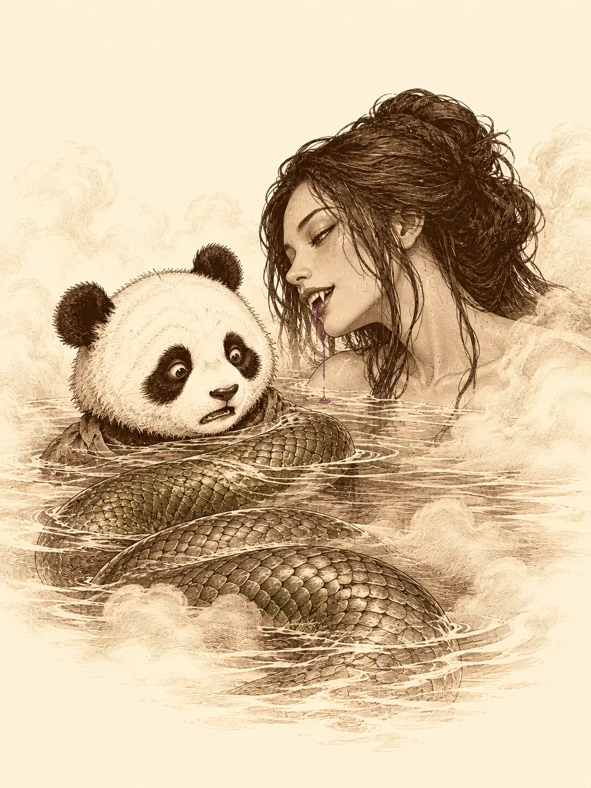

Capítulo 4
Un burdel espeluznante
Libro I · Los cazadores de Ukio
A media mañana la taberna de Kitaro olía a caldo de pollo y a leña recién echada al fuego. Jin, Shiru y Hayate llevaban casi un mes en Ukio sin pagar una sola noche, y se les notaba en la manera de sentarse. Junto a la chimenea dormía el nekomata, hecho un ovillo oscuro del que asomaban dos colas. Nadie se lo había llevado a ninguna universidad; se había quedado allí, como se quedan los gatos donde hay brasas y pescado.
La puerta se abrió de golpe y entró un panda.
Era pequeño como un niño y llevaba ropas gastadas de monje errante. Cruzó la sala sin mirar a nadie, se encaramó a Kitaro, lo agarró por la pechera y empezó a sacudirlo con todas sus fuerzas, que no eran muchas.
"¡Comida! ¡Mira qué flaco estoy! ¡Ayúdame, por favor!".
Kitaro, que era un hombre corpulento, se lo despegó de encima como a un muñeco de trapo y lo sentó a la mesa de los cazadores. El panda alcanzó una sopa de pollo y se la bebió entera en lo que se tarda en contarlo. Kitaro volvió de la cocina con una bandeja de arroz y fideos, y al pequeño le sirvió el doble.
"Toma, que tienes que crecer".
Se llamaba Po. Contó su historia entre bocado y bocado: había interrumpido una gran celebración en su aldea, la ceremonia en la que nombraban al caballero dragón que debía defenderla, y en el alboroto había aplastado sin querer a una tortuga. La gente se enfadó mucho y lo echaron. Ahora buscaba al verdadero caballero dragón, para volver con él y arreglarlo todo.
El nekomata se desperezó junto al fuego, saltó a la mesa y olisqueó al panda, que no era mucho más grande que él. Después se volvió hacia Hayate y le habló en silvano.
"¿Y este nos lo podemos comer?".
"De momento no", contestó el arquero en la misma lengua. "Vamos a conocerlo un poco. Parece buen chico".
El gato no pareció convencido. Con una pata empujó un plato hasta el borde de la mesa, lo dejó caer, saltó tras él y se marchó con su botín.
La puerta volvió a abrirse de golpe. Entró una geisha con el maquillaje corrido, buscando a Kitaro con los ojos, y el tabernero la llevó hasta los cazadores.
"Cuéntaselo a ellos. Sabrán qué hacer".
La muchacha hizo una reverencia. Trabajaba en el burdel. Desde hacía una semana tenían una madame nueva, que había cambiado muchas cosas, y había ocurrido algo que no conseguía quitarse de la cabeza: la madame y dos compañeras habían entrado en una habitación con un cliente, a ella la habían echado, y al cliente no lo había vuelto a ver salir. Creía que lo habían sacrificado, o algo peor.
Miró a Kitaro, nerviosa, sacó algo de debajo de la túnica y lo dejó sobre la mesa.
Era un dedo humano.
Po pidió que se lo friesen para llevar. Shiru se lo quitó con una seriedad absoluta.
"¿Pero tú no sabes que este dedo puede ser un arma mortífera?".
Se lo guardó en el bolsillo, para el momento oportuno.
Pasaron por la herrería a cargar flechas y alguna trampa de cadena. En la puerta, alguien dijo que, si los que morían en aquel burdel eran sus clientes, a él no le quitaba el sueño. Otro le respondió que eso no convertía a un demonio en algo bueno. La discusión se quedó sin cerrar.
El burdel era la casa más ostentosa de Ukio. Tenía las paredes cubiertas de telas, ventanales que daban a la calle y, detrás de uno de ellos, una geisha que bailaba para los aldeanos que se paraban a mirar con la boca abierta.
Dentro, en un recibidor pequeño, una mujer vestida de negro y rojo anotaba algo con una pluma. La entrada costaba dos monedas de oro. Le dijeron que venían a trabajar, que investigaban por encargo del alcalde, y la mujer, tras un momento de duda, apartó la cortina.
La sala principal estaba llena de humo dulce, de risas y de sake. Sobre una tarima había un piano y, junto a él, una geisha cantaba mientras tocaba el arpa. Las chicas, con la cara pintada de blanco y los vestidos muy ceñidos, se repartían entre las mesas, y entre los clientes los cazadores reconocieron caras del pueblo, alguna que habían visto paseando con su mujer.
La madame resultó ser una anciana menuda y arrugada que lo dirigía todo desde la barra, rápida, precisa, despachando a las geishas con un gesto. Cuando le hablaron del alcalde arrugó todavía más la frente, pero dijo que colaboraría. Mandó traer los libros de entradas y salidas y los dejó caer sobre la mesa.
"Aquí entra todo el mundo y sale todo el mundo", dijo. "Si algún caballero decide, después de probar los placeres de nuestras chicas, abandonar a su mujer, eso ya no es asunto mío".
Shiru sacó el dedo y lo puso encima de los libros. La anciana lo miró con asco, pero les dejó registrar el local.
Jin se sentó a leer. Las columnas cuadraban: quien entraba, salía. Hayate recorrió la sala buscando sangre o cualquier cosa fuera de lugar, y al llegar a la tarima se detuvo. Bajo el vestido de la arpista, cuando se movió, le pareció ver una pierna verdosa, o algo parecido a una pierna, que la tela volvió a tapar enseguida. Se lo contó a los demás en voz baja.
Shiru decidió comprobarlo a su manera. Subió a la tarima, se desabrochó la parte de arriba del kimono y empezó a encadenar poses heroicas, como las estatuas de los antiguos guerreros. La arpista lo siguió con la música, las chicas chillaron, los hombres se removieron con cierta incomodidad y toda la sala acabó pendiente del ciervo. Todos menos él, que entre pose y pose miraba de reojo a la cantante. Esta vez lo vio mejor. No eran dos piernas, sino algo largo y verde que se prolongaba por debajo de la tela, como si las piernas se le hubieran soldado en una sola pieza. Una cola.
Po, mientras tanto, se había perdido por unos pasillos teñidos de luz rojiza, con puertas numeradas a ambos lados. Detrás de una de ellas oyó una voz de mujer que cantaba. Entreabrió apenas y vio una sala con una gran bañera de agua humeante y una geisha desnuda que se peinaba dentro.
"Pasa, pasa", le dijo. "Adelante, pequeño".
Jin y Hayate, que lo habían seguido un trecho, no se fiaron del tono de la invitación y se alejaron por el pasillo. Po, en cambio, metió una pata en el agua, comprobó que estaba calentita y se sumergió hasta el cuello con un suspiro.
La mujer sacó un peine dorado con brillantes y empezó a peinarle el pelaje despacio. Le preguntó si él también era uno de los cazadores. Po bostezó: había venido con ellos, así que suponía que sí.
Bajo el agua algo le rozó la espalda. Era grueso, como un brazo enorme, y siguió avanzando por su costado hasta rodearle el estómago. Po entreabrió los ojos. La mujer tenía una mano en su cabeza y la otra en su hombro. Intentó saltar fuera de la bañera y no pudo. Bajó la vista y vio una cola verde que le daba vueltas al cuerpo, y por encima de ella a la geisha, que ya no era del todo una geisha, sino una mujer serpiente con los colmillos goteando un líquido morado.
"Amigo de los cazadores", siseó.
Po gritó con todas sus fuerzas.
Lo oyeron todos. Jin corrió hacia la bañera. Hayate corrió también y una segunda cola salió de la nada a por él; el arquero saltó por encima en el último instante y vio a otra mujer serpiente gritándole que no se iba a escapar. En la sala principal, Shiru agarró el piano.

No hubo tiempo para que la cantante entendiera lo que pasaba. El ciervo se lo estampó en la cabeza con un estruendo de cuerdas rotas, y aquello fue como abrir una compuerta. La mitad de las mujeres empezaron a cambiar. A una se le agitó el pelo como si tuviera vida propia y, al girarse, mostró una segunda boca abierta en la nuca. Otra, que estaba abrazada a un cliente, se convirtió en una serpiente gigantesca y lo estrujó hasta matarlo. Los hombres echaron a correr hacia la salida, y algunas geishas con ellos, pero no todos lo consiguieron. Una melena viva cortó la cabeza de uno de los que huían, y otra se enroscó en una muchacha y la arrastró hasta la boca de la nuca, que empezó a masticar.
La madame tiró los platos al suelo.
"¡Os dejo investigar tranquilamente y lo primero que hacéis es romperle el piano a mi cantante!".
La piel de la cara se le empezó a desprender a tiras y debajo apareció una calavera.
Hayate atrancó con una jabalina la puerta de la habitación donde se había quedado una de las serpientes, y la criatura se pasó el resto de la pelea golpeándola desde dentro. La madame extendió los dedos y de ellos brotaron hilos que cubrieron el pasillo de telarañas; Shiru, al que la mujer de la melena había arrastrado hacia ella, se soltó, cogió una vela y la lanzó contra la tela, que ardió y le abrió paso. Hayate prendió fuego a las paredes de papel del corredor. Entonces la madame agarró a una de sus propias serpientes y la empujó sobre las llamas, para que las otras pasaran por encima de su cuerpo humeante.
"¡Ahora podremos pasar!".
En la sala de la bañera, Jin abrió un tajo en el lomo de la serpiente que sujetaba a Po, y el panda acabó con ella de un golpe.
"¿Qué ha pasado? Jin, ¿qué está pasando? ¡Vámonos de aquí!".
"Cállate y ve a reventar cabezas".
La madame les gritaba desde el pasillo que no mataran a sus hijas, que todo era culpa de ellos, que ellas no se habían comido a nadie que no hubiera tenido que morir: los muertos de esa noche las habían visto, y por eso habían tenido que acabar con ellos. Jin respondió con una onda de trueno que hizo temblar los tabiques y arrojó a una de aquellas criaturas contra el fuego. De los dedos huesudos de la anciana salió un rayo verde que alcanzó a Hayate y lo dejó con el estómago revuelto y la puntería torcida. Una de las mujeres de la nuca chilló delante de Shiru, y el cervan sintió de pronto un hambre feroz que le volvía torpes los brazos.
La mujer de la melena lo envolvió por completo. Shiru quedó convertido en un capullo de pelo negro del que solo salía una voz amortiguada. Desde dentro, con la antorcha que aún llevaba, prendió fuego a su prisión hasta que pudo respirar. Po se concentró, juntó el aire de la sala en las palmas y lo soltó de golpe contra la madame, que salió despedida varios metros y cayó de espaldas.
Cuando se levantó, se volvió hacia Jin, trazó un gesto con las manos y le lanzó una bola negra a la cara. Jin se quedó ciego. Siguió dando estocadas a lo que oía, y una serpiente le mordió.
Shiru se agachó, agarró por la cola el cadáver de una de las serpientes muertas y lo levantó como una maza. Lo descargó contra varias enemigas a la vez. El cuerpo reventó en una lluvia de sangre que le empapó la cara. Jin, todavía a ciegas, cortó de un tajo media melena de la mujer que tenía delante, y poco después aquel pelo ardía y la criatura chillaba con la cabeza en llamas.
Hayate tensó el arco y esperó. La flecha entró limpia por la cuenca vacía de la calavera.
La madame se tapó la cara con una mano. Les exigió que pararan o acabaría con ellos. Jin, que ya veía de nuevo, la miró de frente, y ella le cantó. Era una nana antigua, dulce, y a su compás Jin y Shiru se desplomaron en mitad de la batalla, dormidos como niños.
Po fue el primero en reaccionar. Corrió hasta el ciervo y lo despertó a codazos. Pero en ese momento la serpiente encerrada hizo astillas la puerta, alargó el cuello y le clavó los colmillos en el costado, y el panda se desplomó sin sentido sobre el tatami. Jin, que para entonces había vuelto en sí, llegó hasta él y le hizo tragar una poción. Po abrió los ojos, tosió, se levantó y, sin decir nada, dejó caer su trampa a los pies de la madame. La cadena se cerró sobre su tobillo con un chasquido. La anciana quedó clavada al suelo.
Shiru sacó entonces el dedo del bolsillo y, con toda la convicción del mundo, intentó apuñalarla con él. No le hizo nada. Jin sí. Le abrió el pecho de un tajo y la anciana cayó.
Antes de que nadie pudiera celebrarlo, la sangre derramada corrió hacia ella por el tatami y volvió a entrarle por la herida. Se incorporó con las manos en alto.
"¡Vale, vale, vale! ¡Parad! Haremos un trato".
Habló desde el suelo, con la cadena al tobillo. Si le dejaban el burdel abierto, ella y sus hijas jurarían no matar a nadie más. A cambio, abriría una tienda junto a la posada, una tienda especial que les daría mucho dinero. Le preguntaron de qué comían, y lo admitió sin rodeos: se alimentaban solo de los hombres que engañaban a sus mujeres. Pero no volverían a hacerlo. Lo prometía. Y, para que se fiaran, les daría cien monedas de oro a cada uno, allí mismo.
Hayate y Shiru aceptaron, aunque alguno añadió que las iban a vigilar de cerca. Po miró a sus compañeros y dijo que sí.
Jin se apartó.
"No pienso aceptar el trato de un ser inmundo que mata por placer". Se quedó mirando a los otros tres. "Me dais asco. ¿Cómo podéis aceptar?".
Salió del burdel sin volverse. La madame repartió las bolsas y le tendió a Po la que era para su compañero, para que se la diera. El panda se la guardó.
"Eso, querida señora, en la lengua de mi tierra significa que me la quedo yo".
La última serpiente que quedaba en pie volvió a encogerse en forma de geisha y se escondió detrás de su madre. Antes de marcharse, alguien le advirtió que se portaran bien, porque a la primera cosa rara volvería a entrar por esa puerta a reventarlo todo.
Al día siguiente, junto a la taberna, había una casa nueva con las mismas telas rojas que el burdel, farolillos rojos en la puerta y un letrero que anunciaba una tienda.
Dentro los esperaba la madame, con su cara de anciana otra vez en su sitio. Sobre el mostrador había una esfera negra, transparente, en la que algo se movía como humo.
"Si ponéis aquí veinte de oro, os puede tocar un premio".
Probaron. Las primeras monedas desaparecieron sin dejar nada a cambio. Luego Hayate puso sus veinte y la esfera le devolvió trescientas, y el arquero se quedó mirando el montón con las alas un poco erizadas. Otro probó después y se llevó cincuenta. La anciana sonrió.
"A partir de ahora, cada vez que salgáis a cumplir un encargo, podréis probar suerte una vez".
Alguno quiso gastarse lo ganado en pociones, pero el alquimista de Ukio seguía sin abrir sus puertas. En la taberna, junto a la chimenea, el nekomata dormía con la panza llena del plato robado, y la silla de Jin estaba vacía.